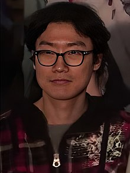
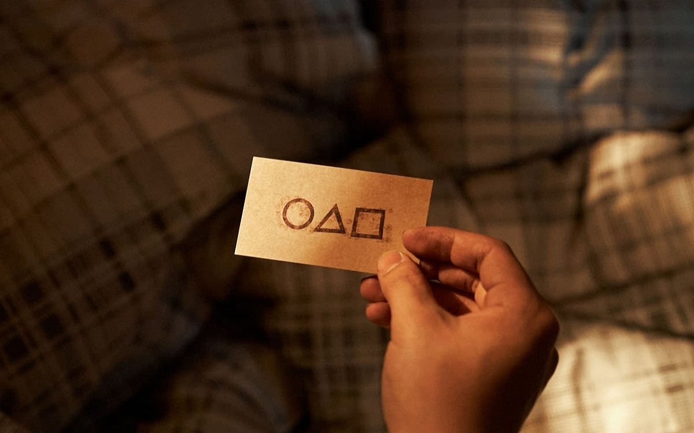

Squid Game , ou Le Jeu du calmar au Québec, est une série télévisée dramatique de survie sud-coréenne de 9 épisodes,
créée par Hwang Dong-hyeok et diffusée dans le monde entier le 17 septembre 2021 sur Netflix.
Mettant en vedette Lee Jung-jae, Park Hae-soo et Jung Ho-yeon, cette série raconte l'histoire d'un groupe de personnes,
fortement endettées, voire ruinées, qui risquent leur vie dans un jeu de survie mystérieux avec comme récompense une somme énorme.
Première série sud-coréenne à s'imposer en tête du top 10 de la plateforme de streaming,
ce programme comparé à Hunger Games ou Battle Royale a pris « les critiques comme le public par surprise ».
D'après Deadline, elle a même dominé, en l'espace de 10 jours, le top 10 de la plateforme dans 90 pays.
Le 12 octobre 2021, Netflix annonce que la série comptabilise le meilleur démarrage jamais vu sur sa plateforme,
avec un total de 111 millions de visionnages en 27 jours,
dépassant ainsi la série américaine La Chronique des Bridgerton et ses 82 millions de vues en un mois.
Le 9 novembre 2021, le réalisateur Hwang Dong-hyeok annonce officiellement une deuxième saison.
LE CREATEUR DE SERIE :

Hwang Dong-hyeok , est un scénariste et réalisateur sud-coréen, né le 21 mai 1971 à Séoul.
Il est le créateur de la série Squid Game, diffusée en 2021 sur Netflix.
En septembre 2019, on apprend qu'il écrirait et réaliserait une série télévisée,
initialement intitulée Round Six, pour Netflix.
L'histoire est inspirée d'un jeu populaire sud-coréen pour enfants des années 1970 et 1980 connu sous le nom du « jeu du calmar ».
Elle est diffusée sous le titre Squid Game dans le monde entier le 17 septembre 2021
Un an après avoir gagné le jeu, Seong Gi-hun n’a toujours pas utilisé l’argent qu’il a gagné.
Sa mère est morte et sa fille est loin. L’organisateur du jeu décide de rencontrer le gagnant.
Seong Gi-hun découvre que le cerveau de ce terrible système est Oh Il-nam, le joueur numéro 1.
Le vieil homme avoue que lui et un groupe de personnes très riches ont organisé ces jeux pour « s’amuser ».
Il a d’ailleurs décidé de participer lui-même à ce défi. Oh Il-nam, qui n’a pas menti sur sa maladie, meurt peu après.
QUE SE PASSE-T-IL DANS LA SAISON 1 :

Après cette première tuerie de masse commence donc à jeu à mort dans lequel on joue aussi bien pour l’argent que pour sa survie.
Seong Gi-hun va se créer une petite équipe avec Cho Sang-woo, Oh Il-nam, Ali Abdu et Kang Sae-byeok.
Il n’est pas le seul car en face, une autre équipe composée d’individus bien moins bienveillants s’est également constituée.
Chacun traverse les jeux, avec à chaque fois des pertes de chaque côté. Des émeutes éclatent,
réduisant encore un peu plus le nombre de survivants.
Pendant ce temps, le policier Hwang Jun-ho mène l’enquête pour retrouver son frère disparu.
Il retrouve la piste du bunker isolé et s’infiltre parmi l’équipe d’employés, chacun affublé d’un costume avec un cercle.
un carré ou un triangle sur leur masque pour identifier leur hiérarchie. De fil en aiguille,
il découvre que le Squid Game est organisé chaque année pour divertir un petit groupe de « VIP »
(comprenez milliardaires ennuyés par une vie d’opulence). Pire encore, il finit par comprendre que son frère est en réalité un ancien vainqueur des jeux,
devenu maître de cérémonie pour au service de ces fameux VIP.
Épisodes / Squid Game
Saison 1
Année de sortie : 2021
Tentés par un prix alléchant en cas de victoire,
des centaines de joueurs désargentés acceptent de s'affronter lors de jeux pour enfants aux enjeux mortels.

LES GAMES DE saison 1 :
- Un, deux, trois, soleil
- Enfer
- L'homme au parapluie
- L'équipe avant tout
- Un monde juste
- Gganbu
- VIP
- Leader
- Jour de chance